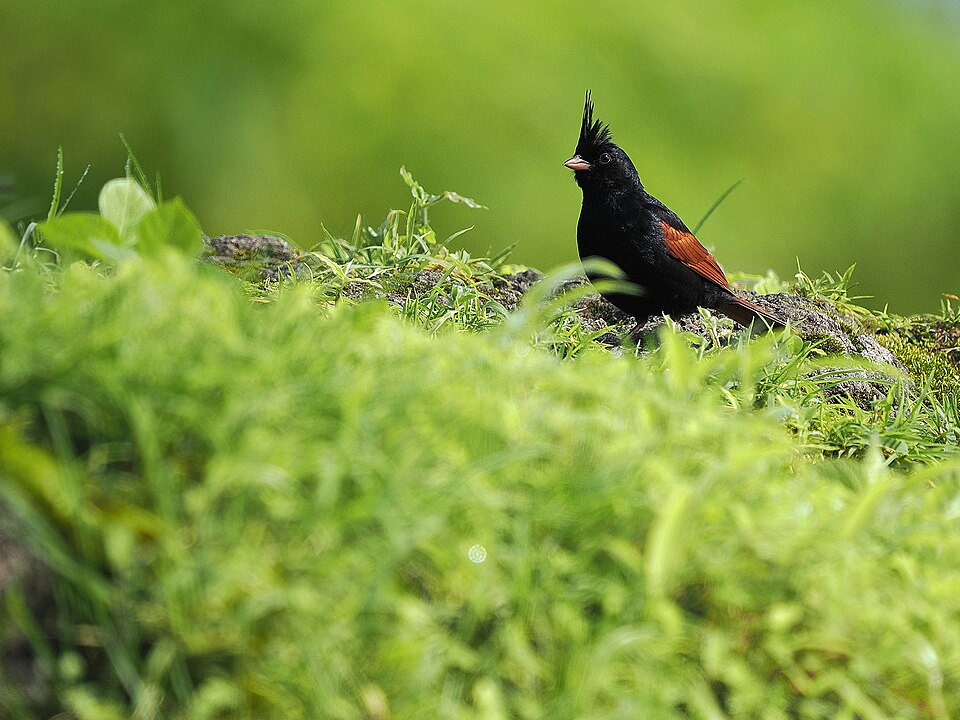
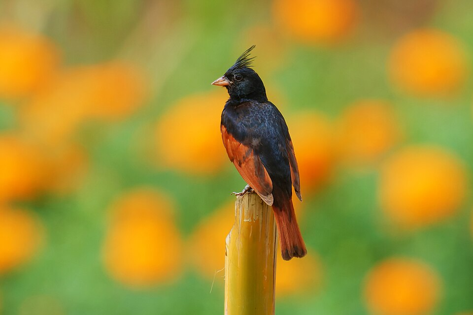

Crested Buntingतुरेवाला भारीट
Emberiza lathami
The Crested Bunting (तुरेवाला भारीट) is a small bird with a pointed crest that gives its head a distinctive shape. The male is particularly striking, with a dark body and rich chestnut wings that stand out against the grasses and rocks where it lives.
Listen to the Crested Bunting (तुरेवाला भारीट) ↓
Listen to its song
Play the recording to hear the bird’s song, and listen for the repeated notes and the pauses between them.
- Family
- Emberizidae
- Habitat
- Grassy, rocky hillsides
- On the menu
- Mostly seeds, with some insects
How to recognise the Crested Bunting (तुरेवाला भारीट)
The Crested Bunting (तुरेवाला भारीट) belongs to the bunting family, Emberizidae, and is similar in size to a sparrow. Both males and females have a pointed crest, which is one of the most useful features to look for when identifying the bird. The male has a dark head and body, while its wings and tail are a contrasting chestnut colour. The female is olive-brown with darker streaks, and her crest is shorter than the male’s.
Its short, cone-shaped bill helps it feed on seeds. You will often see these birds searching for food on the ground rather than high in the trees. During winter, they may gather in flocks and feed alongside other buntings, finches and larks.

The open landscapes it calls home
The Crested Bunting (तुरेवाला भारीट) usually lives in open, fairly dry places where grasses grow among scattered bushes and exposed rocks. Rocky hillsides, thorn scrub and grassland all provide suitable habitat. It can also be found around terraced fields, in open thorny woodland and along the edges of forests.
It occurs at a range of elevations rather than being restricted to the plains or the hills. In the Himalayas, some populations move between higher and lower ground as the seasons change.

What it eats and how it feeds
Seeds from grasses and weeds form the main part of its diet. In cultivated areas, it also feeds on grain that has fallen to the ground. Although it is mainly a seed eater, the Crested Bunting (तुरेवाला भारीट) also takes insects, including winged termites, and has sometimes been seen catching insects in flight.
Much of its search for food takes place on or near the ground, among grasses and other low-growing plants.
Where you may find it in India
In India, the Crested Bunting (तुरेवाला भारीट) occurs along the lower Himalayas, including parts of Jammu, Himachal Pradesh and Uttarakhand, as well as in some of the nearby northern plains. It is also found in Rajasthan and Gujarat, across parts of central India, and in areas of Maharashtra and Telangana.
Farther east, its range includes West Bengal and parts of northeastern India. It is not evenly distributed across these regions, so you are more likely to find it where there are suitable grassy slopes, rocky ground and open scrub. Its presence can vary from one locality to another and may also change with the season.
Explore more about the Crested Bunting (तुरेवाला भारीट) on eBird.
View Crested Bunting (तुरेवाला भारीट) on eBird ↗.jpg)